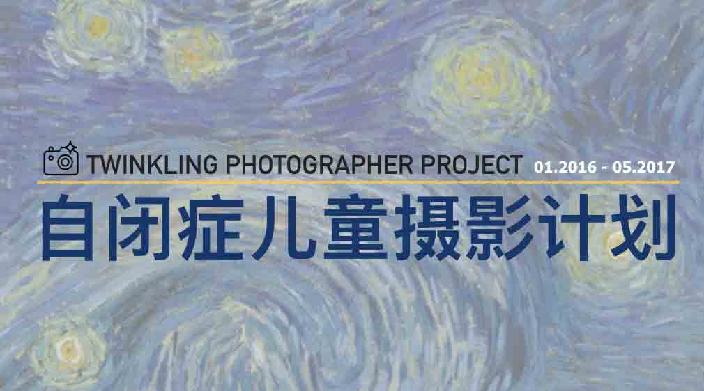
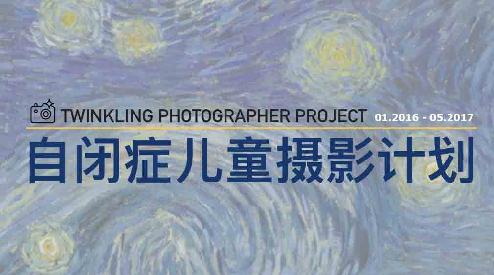

“自闭症儿童摄影计划”是一次将公益项目以众包方式长周期推进的尝试。

所有参与者，包括发起人自身，都是在工作/学习之外的个人时间内无偿投入的志愿者。
这个项目由最初一个人的点子，到一个月后三位愿意参与项目全程的核心成员的加入，再到今年三月初开始正式的招募筹备，数星期间，我们汇集了国内多家著名的自闭症教育研究机构、摄影社区、媒体等机构组织的加入，以及分散在中国乃至国外数个城市共60余位志愿者团队，还有无数给予这个项目真诚帮助与建议的公益热心人士的参与。
每一次帮助，每一次引荐和每一次鼓励，都是对这个项目的难得助力。
每个人都分享一些自己的资源，贡献一些自己的技能和时间，累积起来，我们才可以一起把这个项目更快更好的往前推进。
▼资金
1) 我们同时正在腾讯公益上募捐此项目的启动资金76,700元（由中华社会救助基金会作为公募机构认领，主要用于第一次展览及第一轮协同创作的初期筹备），如果您有兴趣支持此项目，请点击此处，或扫描二维码进行捐款，感谢：）
2）企业/机构/基金赞助，用于支持此项目后期13个月（到明年5月止，包含另外2次展览和2轮共8个月的协同创作），欢迎发送邮件至： contact@autismphotographer.org。
▼传播
1）如果您希望以新闻报道，故事采写或视频/纪录片/公益广告的方式与此项目合作，非常期待您与我们联系，
欢迎发送邮件至：contact@autismphotographer.org。
2）所有发布的文章均为我们的原创文章，如需转载请联系我们请求授权。
▼企业/机构合作
如果您认同此项目的理念，且认为您所在的企业/机构有可以帮助到这个项目的潜在结合点，
欢迎发送邮件至：contact@autismphotographer.org。
▼贡献您的个人技能
如果您认同此项目，且擅长以下技能或其他您认为会对这个项目有帮助的技能，尤其重要的，您拥有足够的责任感，那么非常欢迎联系我们！请点此登记您的信息！
我们目前需要帮助的领域有：
＊ "自闭症儿童摄影计划"是一个众包的公益项目。所有参与者，包括发起人自身，都是在工作/学习之外的个人时间内无偿投入的志愿者。
＊ 所有以上列出的工作均为没有物质报酬的志愿者工作。
＊在项目进行过程中，此项目以任何形式（包括但不限于，捐款/拍卖收入/摄影器材捐助等）所获得的所有资金或摄影器材等捐赠将全部进入“自闭症儿童摄影计划”基金，由北京星星雨教育研究所监督管理并公示使用情况。
感谢您对“自闭症儿童摄影计划”的兴趣。
期待您的加入，与我们一起，等“星星”来：）